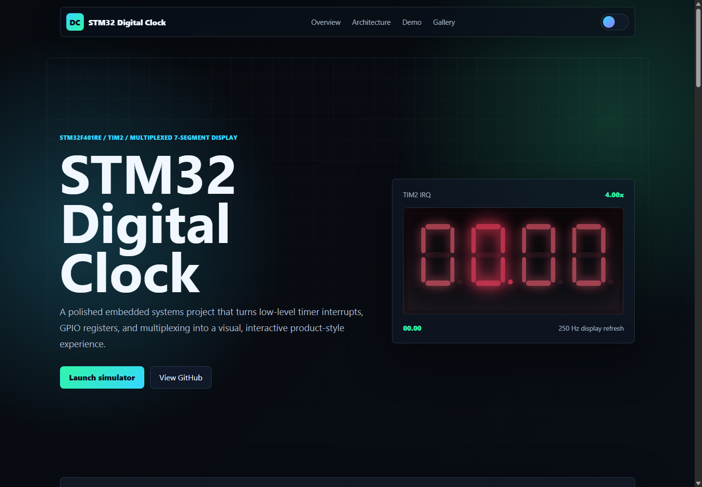
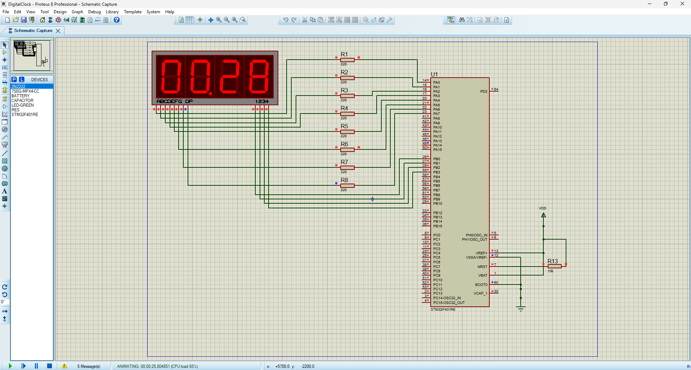
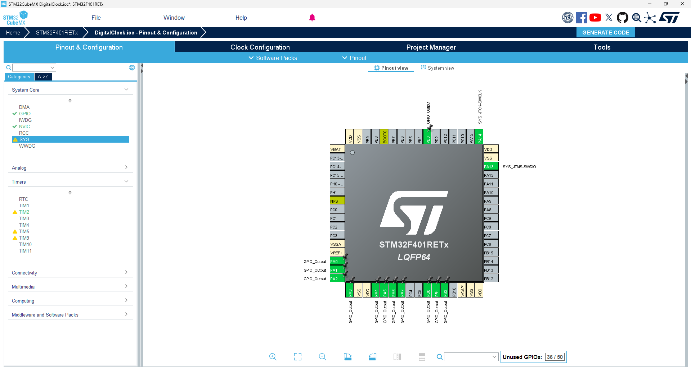

Interrupt-driven timing
TIM2 generates a 1 ms update event. The ISR refreshes one display digit and advances the software clock.
STM32F401RE / TIM2 / Multiplexed 7-Segment Display
A polished embedded systems project that turns low-level timer interrupts, GPIO registers, and multiplexing into a visual, interactive product-style experience.
Project Overview
The embedded code counts minutes and seconds from `00.00` to `59.59`, then rolls over. The web interface mirrors the real firmware behavior so viewers can understand the timer, register, and display logic without opening Proteus or STM32CubeIDE.
TIM2 generates a 1 ms update event. The ISR refreshes one display digit and advances the software clock.
GPIOA drives segment patterns and GPIOB selects the active digit using active-low common-cathode lines.
Only one digit is active per interrupt, but a 250 Hz full-display refresh makes the output look continuous.
The web demo adds live register views, speed control, challenge mode, and a polished project presentation.
Architecture
Technologies
How It Works
Interactive Demo
Control the simulated timer, inspect register values, play challenge mode, and switch to wiring notes.
0x3F0x0EPause the clock as close as possible to the target time.
Get within 2 seconds for a hit.
Segments: PA0=A, PA1=B, PA2=C, PA3=D, PA4=E, PA5=F, PA6=G, PA7=DP.
Digits: PB0-PB3 select the four display digits. Common-cathode digit lines are active low.
Timer: HSI 16 MHz, PSC 1599, ARR 9, update interrupt at 1000 Hz.
Gallery



The repository includes the embedded source, Proteus project, documentation assets, and this self-contained web interface.
Open GitHub repository